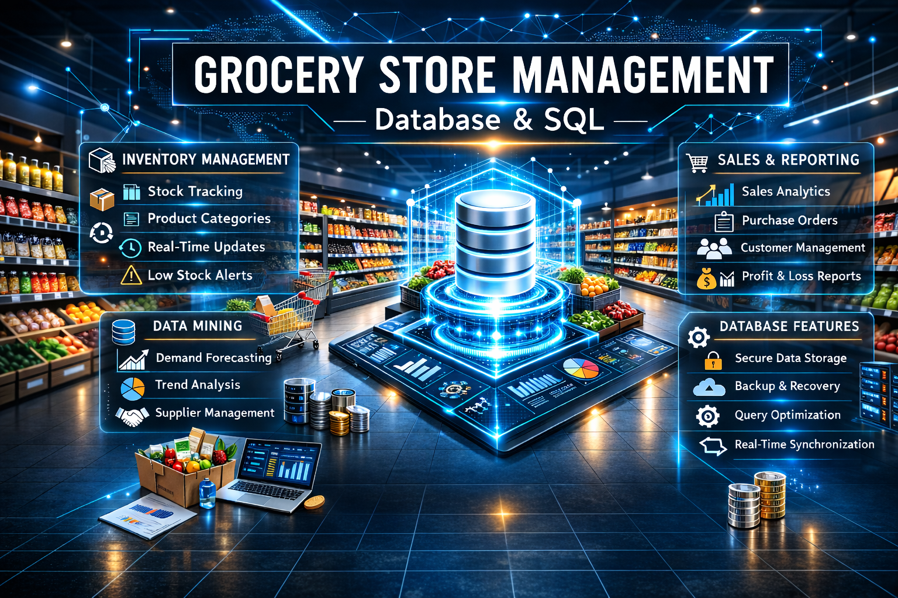
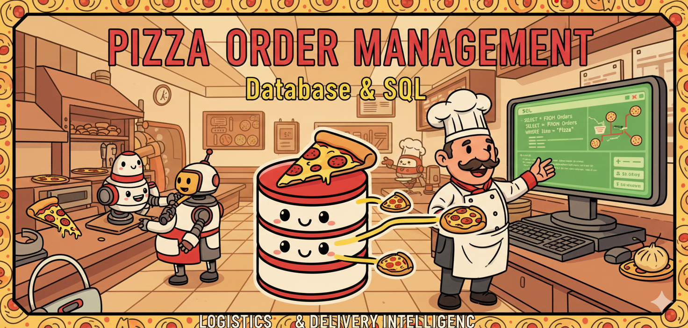

Explore my work across analytics domains

Designed and queried a relational database to manage products, customers, orders, and sales insights.

Analyzed pizza orders, revenue trends, and customer behavior using joins, aggregations, and subqueries.